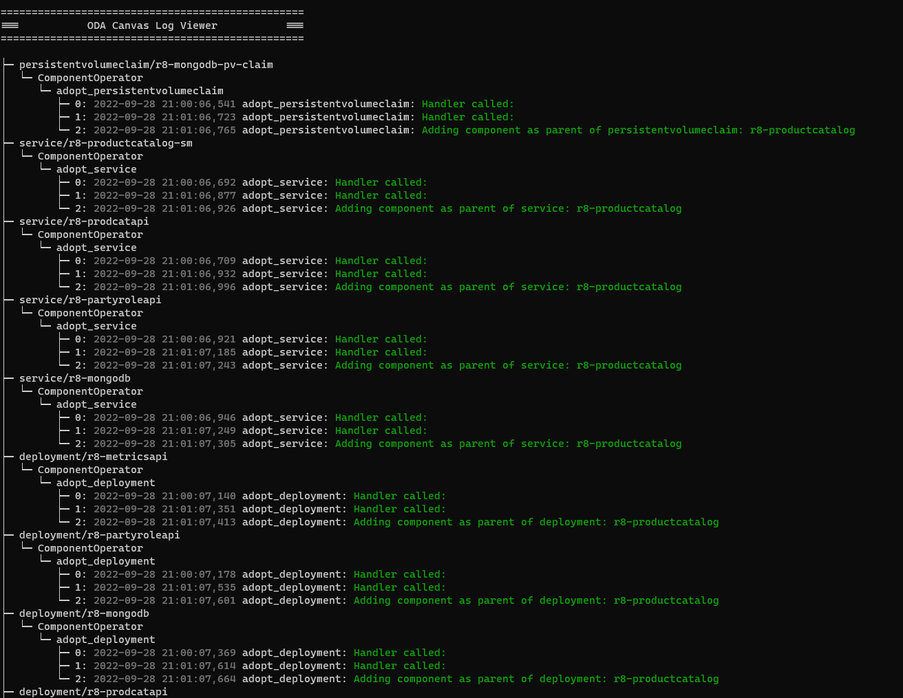
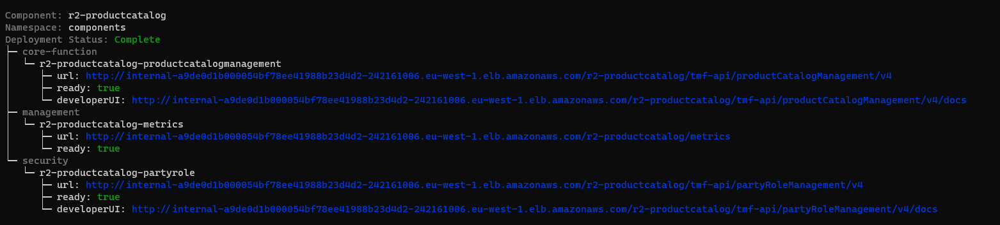

ODA Canvas utilities
Canvas Log Viewer utility
This is a simple kubectl utility to display log information on the ODA Canvas for a Component.
Installation
npm install @lesterthomas/kubectl-canvas_logs -g
Then, to run plugin within kubectl:
kubectl canvas-logs [component name] [component operator pod name]
(in a future release, it should automatically find the component operator pod name, but for now, you can find it using kubectl get pods --selector app=oda-controller -n canvas)
The utility will use the current kubeconfig to connect to the Kubernetes cluster. You should get a screen like the one below:

To exit the utility, type CTRL-C
Publishing
To publish a new version, update the version number in the package.json file and use the command
npm publish --access public
Component Viewer utility
This is a simple kubectl utility to display information on the ODA Component deployment and lifecycle.
Installation
npm install @lesterthomas/kubectl-component_info -g
Then, to run plugin within kubectl:
kubectl component-info
The utility will use the current kubeconfig to connect to the Kubernetes cluster. It will show ‘No ODA Components to view’ if there are no components being deployed. If there are components, you will get a screen like the one below:

To exit the utility, type CTRL-C
Testing locally
During development, you can test the utility locally by installing the dependencies with
npm install
and running the command
npm test
Publishing
To publish a new version, update the version number in the package.json file and use the command
npm publish --access public